This lesson continues our exploration of harvesting OSM data and geoprocessing tools. Our task is to propose a typical geospatial problem and explore how we would solve it in a few ways. We will create geoprocessing workflows in two environments and compare and contrast their relative advantages. We will write a series of SQL statements that accomplish our goal and do the same with the QGIS geoprocessing tools. We will create a tool that automates this analysis, which can be shared with any QGIS user and used on any similar spatial data. You have two options in the lesson; you can do both or either option.
Within the Module 07 > Lesson 07 directory you'll find GeoJSON file with a line feature for a marathon route and point feature for marathon route mile markers.
You are a Colfax Marathon race logistics coordinator in Denver, Colorado. You have been tasked with finding:
Let's gather our data and see how we can solve this challenge.
Create a new project in QGIS. Go to Web > OpenLayers plugin > OpenStreetMap > OpenStreetMap, load the layer, and then zoom into the Denver, CO area.
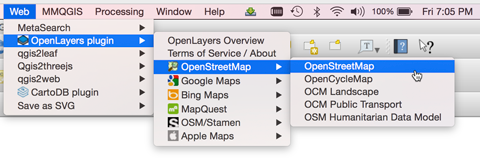
Figure 1: Using OpenLayers to bring in a base map
We'll be using some prepared point and line spatial data of the Denver Colfax marathon route, denver_marathon.json. These data are stored in a GeoJSON format as a FeatureCollection, which includes both a LineString of the marathon route, as well as Point features for the start and end of the route and each mile in between. Load this file into QGIS as a new vector layer.
QGIS will prompt you to select the vector layers you'd like to add to the project. GeoJSON is a flexible data format and allows collections of various feature types (e.g., points, lines, polygons). Choose both layers (hold the Shift key down and click both) and click OK.
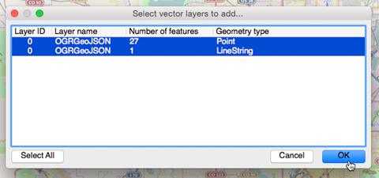
Figure 2: GeoJSON files can hold multiple geometry types.
Right-click on the OGRGeoJSON LineString layer and choose Zoom to Layer. The default setting for the route may be difficult to see over the OSM map, so feel free to change its color and bump up the line thickness. You'll also want to zoom out slightly to include more of the area around the race route, to a view that looks like this:
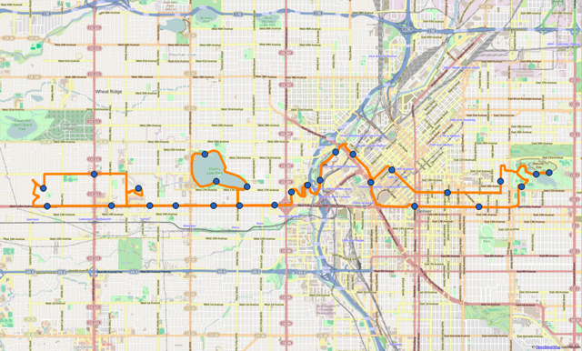
Figure 3: Marathon route and mile markers.
Next, we're going to pull in some OSM data. In the previous lesson, we introduced a few methods for harvesting OSM data. Let's use the QuickOSM plugin to collect the following key/value pairs for our area:
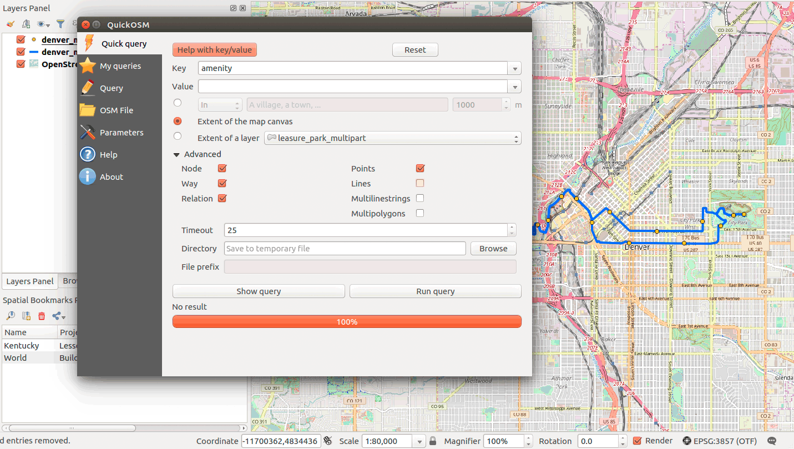
Figure 4: Adding amenities to project
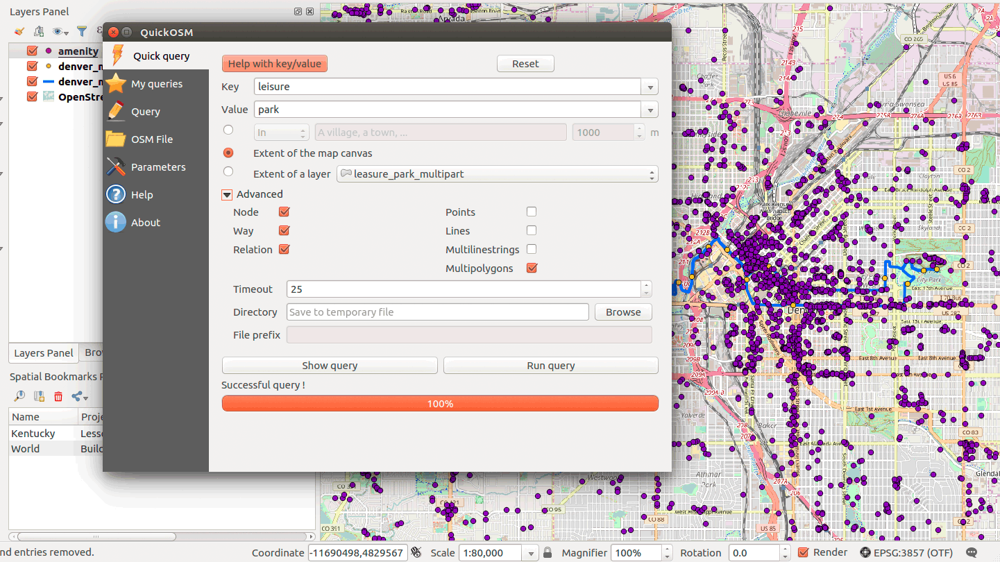
Figure 5: Adding parklands and water features
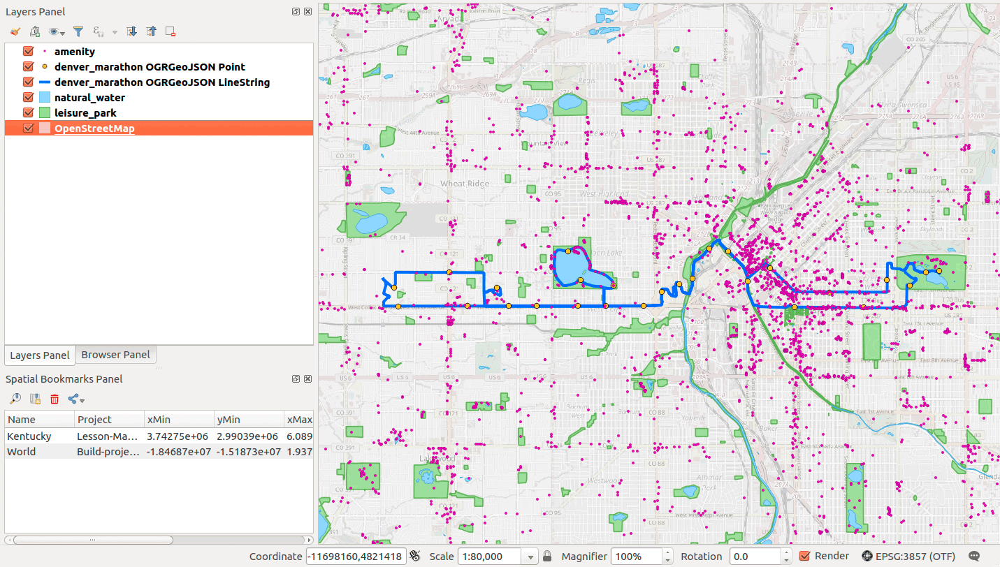
Figure 6: Adding parklands and water features
As you know, the OSM data harvested from QuickOSM are temporary layers with a WGS84 CRS. For our analysis, we need to convert our layers to a local coordinate system for Denver, because we need linear units of measure for producing accurate ground measures in QGIS. A few are available; Colorado Central US ft (EPSG: 2232) and UTM Zone 13 meters (EPSG: 26913) are good choices. Any layers that input a geoprocessing workflow must be in the same CRS. Let's use EPSG: 26913.
We are going to create two sets of projected layers and compare two geoprocessing workflows.
Use the Save as... to save your layers as GeoJSONs:
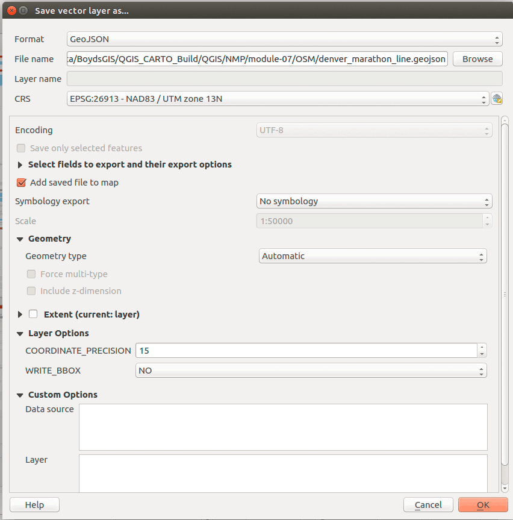
Figure 6: Save vector layer as a GeoJSON in the UTM 13 CRS
Create a SpatiaLite database and import your layers:
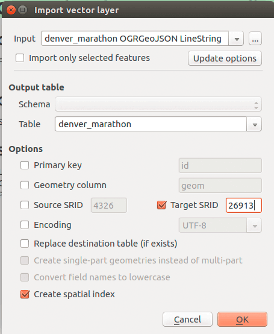
Figure 7: Save vector layer as a SpatiaLite database layer in the UTM 13 CRS
For simplicity, you should also create an output, render, or scratch spatial database. Before we begin the next section, make sure you have the following spatial database setup:
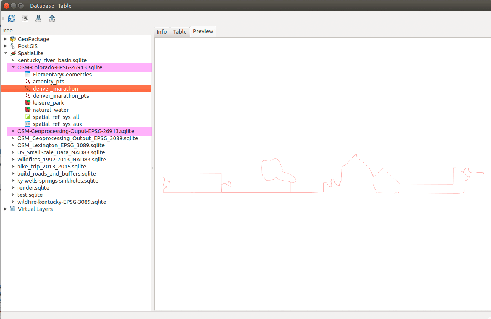
Figure 8: Spatial databases setup
SQL functions use the same GEOS library that many of the vector geoprocessing tools use. The output is the same, but the SQL statements are a little more obscure to create compared to QGIS tools. The advantages of using SQL are that they are plain-text files and that we can run the SQL on many databases outside of QGIS. Access to code allows us to write it once and run it often.
The following SQL is this lesson uses SpatiaLite. The PostGIS method allows us to work entirely in SQL with DB Manager or pgAdmin. If you haven't changed table names, you should be able to copy these statements and paste them into DB Manager.
We introduced the buffer function in the last lesson. A 500-meter buffer polygon can be produced by the following:
/* Buffer a line feature to 500 meters */
select
st_buffer(st_collect(geom),500) as geom,
name
from
denver_marathon
The st_collect() function ensures that we'll have one polygon as an output, similar to the dissolve parameter in the buffer tool. Load the query as a layer and inspect the buffer polygon:
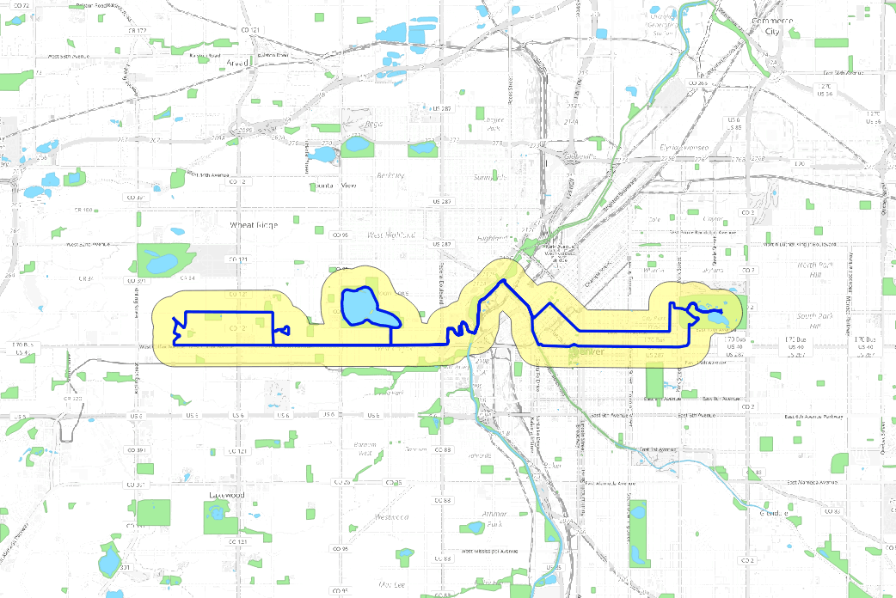
Figure 9: Create a 500-meter buffer polygon around marathon route
Import the buffer polygon back into the database or insert it into a new table:
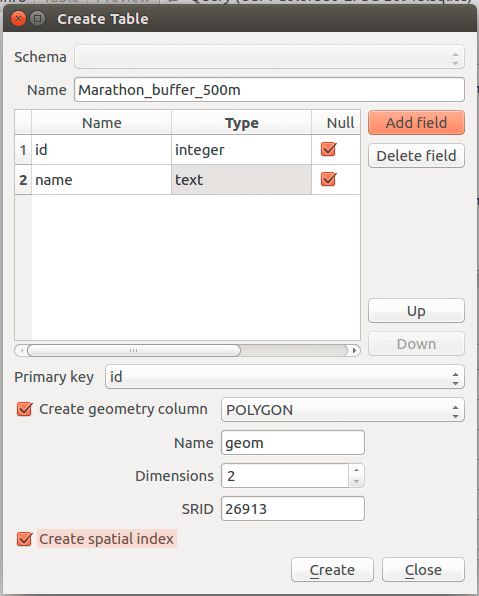
Figure 10: Create a new table to insert 500-meter buffer polygon around marathon route
/* Create new layer from buffer tool */
insert into
Marathon_buffer_500m
(geom,name)
select
st_buffer(st_collect(geom),500) as geom,
name
from
denver_marathon
A Clip function in SQL uses the st_intersection() function, which outputs the intersecting geometries of two layers. The minimum geometry type is the output geometry, e.g., an intersection between point and polygon would output a point geometry type. We could use this simple statement:
/* Clip amenity points by 500-meter buffer polygon around Marathon route */
select
st_intersection(Marathon_buffer_500m.geom,amenity_pts.geom) as geom,
Marathon_buffer_500m.name as marathon_name,
amenity_pts.amenity,
amenity_pts.name
from
Marathon_buffer_500m, amenity_pts
This query should take less than a second to run. If you've created a spatial index for the points and buffer polygon, you could append a where clause with a spatial index query:
/* Clip amenity points by 500-meter buffer polygon around Marathon route */
select
st_intersection(Marathon_buffer_500m.geom,amenity_pts.geom) as geom,
Marathon_buffer_500m.name as marathon_name,
amenity_pts.amenity,
amenity_pts.name
from
Marathon_buffer_500m, amenity_pts
/* Spatial index query to speed things up */
where
amenity_pts.rowid in
(select rowid from SpatialIndex
where f_table_name = 'amenity_pts'
and search_frame = Marathon_buffer_500m.geom)
You should notice a quicker result and a few NULL geometries for non-intersection amenity points. These points are inside the minimum-bounding rectangle out the buffer polygon, but not inside the polygon. How do we remove those? We have a couple of options. We can use the st_intersects() function and do a join as we did in a previous lesson, or we could just append another where clause statement that doesn't include NULL values:
/* Clip amenity points by 500-meter buffer polygon around Marathon route */
select
st_intersection(Marathon_buffer_500m.geom,amenity_pts.geom) as geom,
Marathon_buffer_500m.name as marathon_name,
amenity_pts.amenity,
amenity_pts.name
from
Marathon_buffer_500m, amenity_pts
/* Spatial index query to speed things up */
where
amenity_pts.rowid in
(select rowid from SpatialIndex
where f_table_name = 'amenity_pts'
and search_frame = Marathon_buffer_500m.geom)
/* Remove null geometries from selection */
and
st_intersection(Marathon_buffer_500m.geom,amenity_pts.geom) is not null
Out geospatial challenge asks us to find certain amenities related to bicycle rentals and food/drink. Let's add another where clause that limits our output to just those amenities:
/* Clip amenity points by 500-meter buffer polygon around Marathon route */
select
st_intersection(Marathon_buffer_500m.geom,amenity_pts.geom) as geom,
Marathon_buffer_500m.name as marathon_name,
amenity_pts.amenity,
amenity_pts.name
from
Marathon_buffer_500m, amenity_pts
/* Spatial index query to speed things up */
where
amenity_pts.rowid in
(select rowid from SpatialIndex
where f_table_name = 'amenity_pts'
and search_frame = Marathon_buffer_500m.geom)
/* Remove null geometries from selection */
and
st_intersection(Marathon_buffer_500m.geom,amenity_pts.geom) is not null
/* Select only certain amenities */
and
amenity in ('bicycle_rental','cafe','pub','restaurant','bar')
My query return 390 amenities. Let's load the layer and inspect the output:
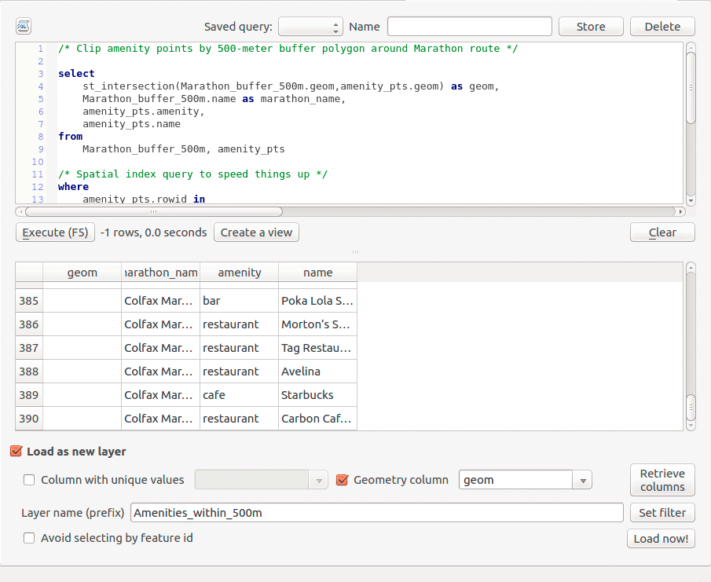
Figure 11: Buffer and clip analysis output
Here is the buffer polygon and clip output in Map Canvas:
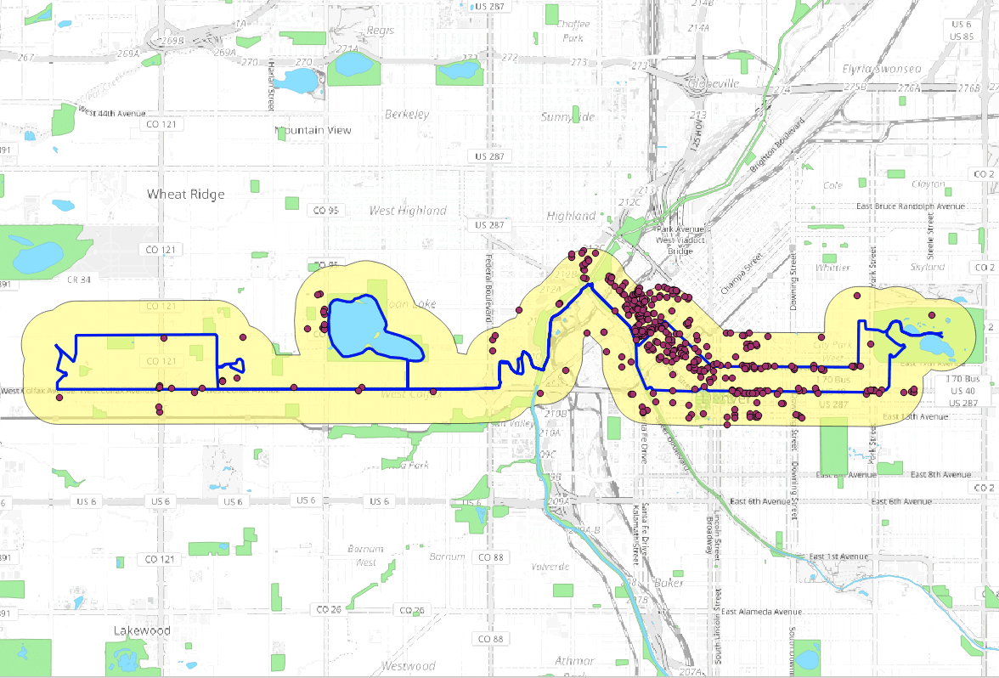
Figure 12: The output in map canvas
A convenient feature in SQL is nesting functions and statements. We could nest the st_buffer() function statement as one of the input geometries for the st_intersection() function:
/* Do a buffer and clip in one statement */
select
st_intersection(
(select st_buffer(st_collect(geom), 500) from denver_marathon),
amenity_pts.geom) as geom,
denver_marathon.name as marathon_name,
amenity_pts.amenity,
amenity_pts.name
from
denver_marathon, amenity_pts
where
/* Remove null geometries from selection */
st_intersection(
(select st_buffer(st_collect(geom), 500) from denver_marathon),
amenity_pts.geom) is not null
/* Select only certain amenities */
and
amenity in ('bicycle_rental','cafe','pub','restaurant','bar')
/* Since we're dynamically creating a buffer polygon, it doesn't have a spatial index */
This statement should select the identical point layer as the previous statement. When you're confident you have successful results, import the layer into your geoprocessing output database.
Since the st_intersection() creates a geometry object, we can use it to measure features. Let's say we wanted to find where the marathon route went through parks and measure the distance. We could make the following query that 'clips' the marathon by every park and adds the park name to the route and it's length in meters:
/* Find and measure length of marathon route through parks */
select
st_intersection(denver_marathon.geom,leisure_park.geom) as geom,
denver_marathon.name,
leisure_park.name as park_name,
st_length(st_intersection(denver_marathon.geom,leisure_park.geom)) as length_in_meters
from
denver_marathon,leisure_park
where
st_intersection(denver_marathon.geom,leisure_park.geom) is not null
We don't need to use a spatial index query since the marathon is one line segment. If we had many line segments, then appending a where clause with a spatial index query might speed up the query. Since the spatial index query is a filter to find intersecting minimum bounding rectangles, you don't need to use it except to reduce your query time.
Let's load the query onto our Map Canvas and inspect the attributes:
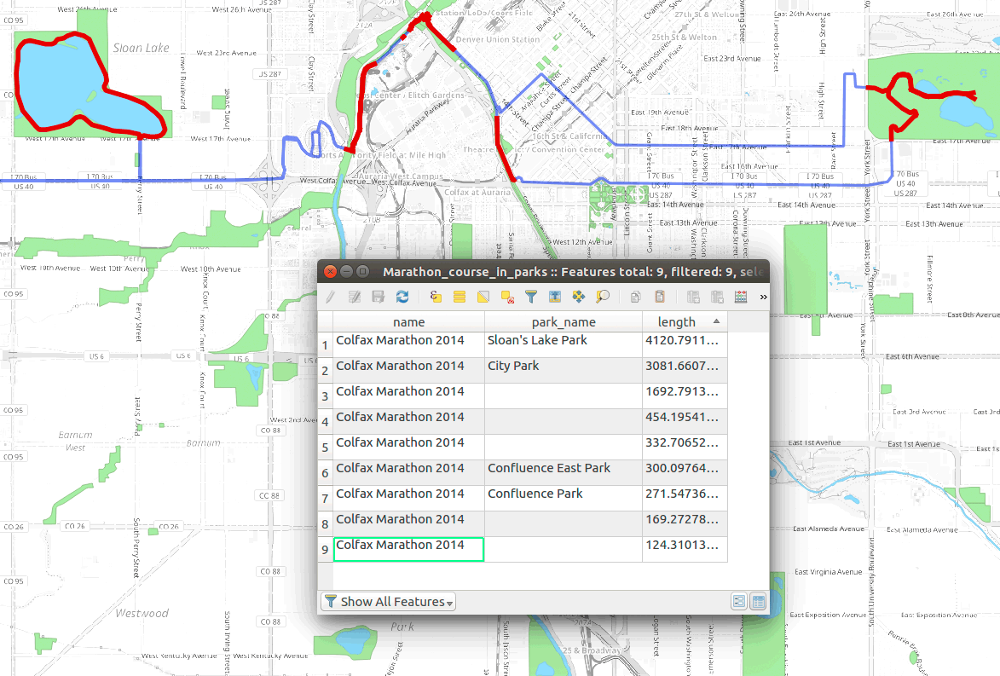
Figure 13: Marathon route in parks with attribute table
Finally, we want to find the total distance of the course. We could use the following query to find distances of the route through parks and for the whole:
/* Calculate length of route in parks */
select
denver_marathon.name,
st_length(denver_marathon.geom) as "Total length, meters",
sum(st_length(st_intersection(denver_marathon.geom,leisure_park.geom))) as "Length in parks, meters"
from
denver_marathon,leisure_park
This query should produce the following output:
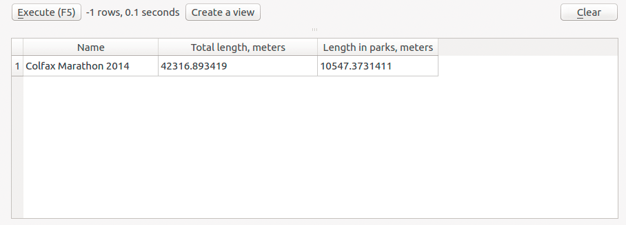
Figure 14: Length of route through park
Let's finish this analysis by importing the marathon route in parks into our spatial database. If we have errors on import, e.g., invalid geometry type, we will need to use the CastToMulti() function in SpatiaLite to explicitly create a multi-part geometry type:
/* Find and measure length of marathon route through parks */
/* CastToMulti() function creates a multipart geometry object */
select
CastToMulti(st_intersection(denver_marathon.geom,leisure_park.geom)) as geom,
denver_marathon.name,
leisure_park.name as park_name,
st_length(st_intersection(denver_marathon.geom,leisure_park.geom)) as length
from
denver_marathon,leisure_park
where
st_intersection(denver_marathon.geom,leisure_park.geom) is not null
When you're finished with your analysis, you should have databases that look similar to these:
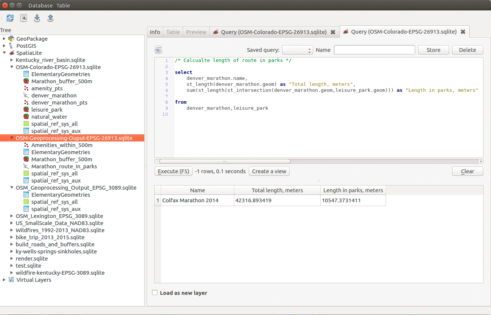
Figure 15: Databases after analysis
QGIS tools have the advantage of presenting options for parameters, which takes a lot of the guess-work out of running the tool. Tools can also be chained together using the Processing Modeler. The disadvantages of using tools are that they change in QGIS (e.g., move in the program's graphical user interface) and we don't have as much control over attributes as compared to SQL.
Before we begin, add the layers you created earlier in the EPSG: 26913 CRS. You should see something similar:
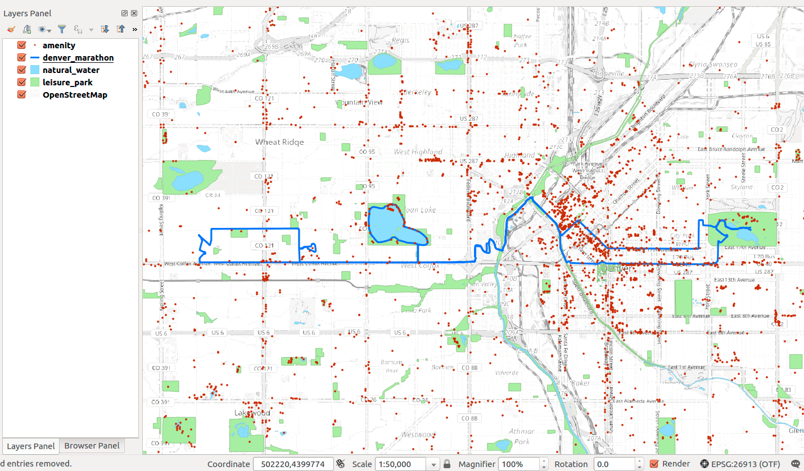
Figure 16: Prepare for geoprocessing by adding all necessary layers to Map Canvas
We want to now create a buffer around the race route (the Polyline) of a certain distance.
Choose Vector > Geoprocessing Tools > Fixed distance buffer.
Use the denver_marathon as our input vector layer. Set the Segments open to "20". Refer to Lesson 05 about what this option accomplishes.
Let's say we want to find all the amenities within a short 'walkable' distance of the route, say 500 meters. The Buffer tool in QGIS is going to use a unit of the Coordinate Reference System (which we now know is meter).
Read more about creating buffers in QGIS.
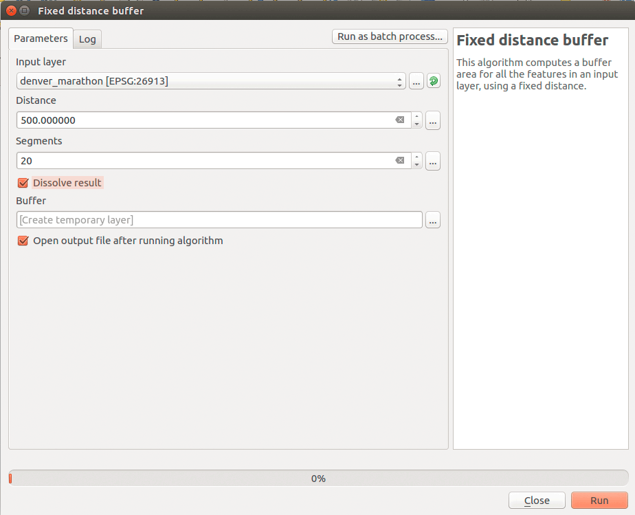
Figure 17: Buffer tool settings
The Buffer tool will create a temporary single polygon layer of the buffer zone and add this to the Map Canvas.
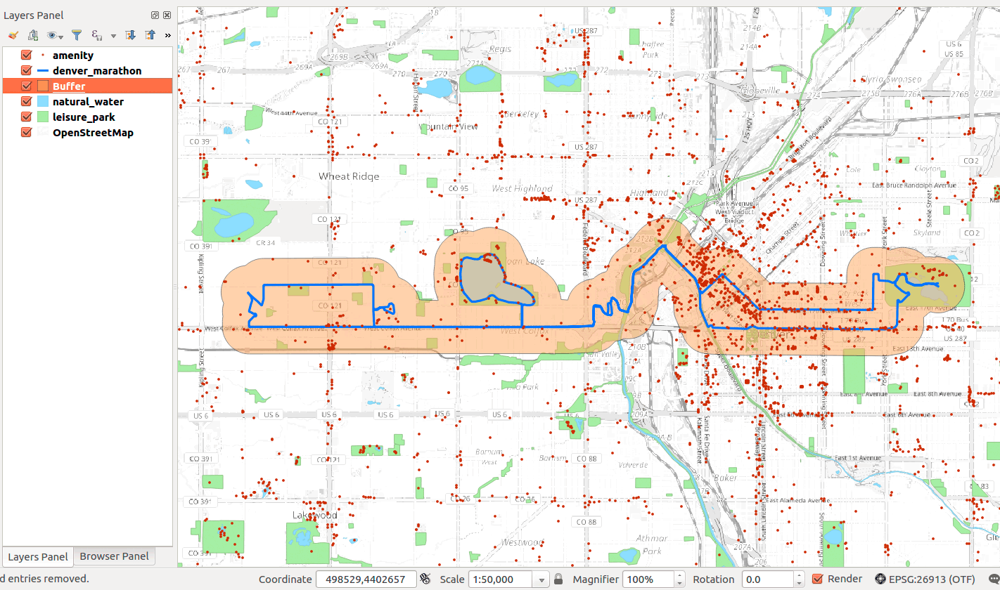
Figure 18: Output buffer polygon
We now have a polygon ('buffer') around the route that we can use for extracting all the amenities we want. Let's do that next.
The procedure for extracting the amenities that overlap with the newly created buffer is simple and straightforward.
Choose Vector > Geoprocessing Tools > Clip.
Use our Amenities layer as the input vector layer (i.e., the one with all our OSM amenity features) and the Buffer layer as the Clip layer. Create temporary output layer:
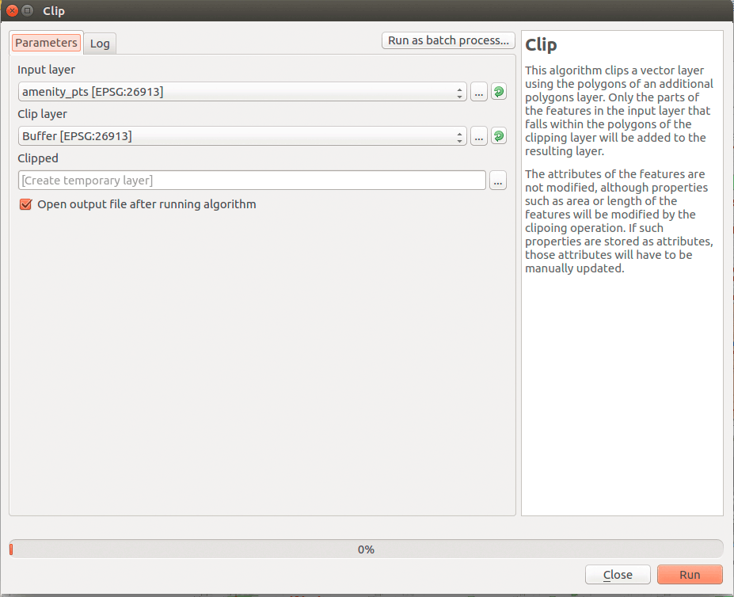
Figure 19: Clip settings
You're output should be close to this screenshot:
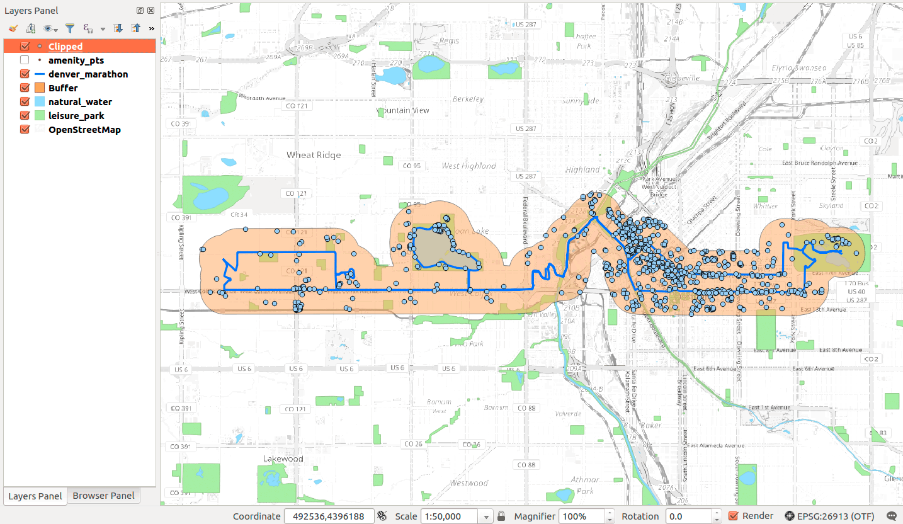
Figure 20: Output clip of amenities
We still need to select out only those amenities offering bicycle rentals and food/drink. We should right-click the Clipped and select Filter... and issue the following SQL statement:
"amenity" IN ('bicycle_rental','cafe','pub','restaurant','bar')
and you should see the following Query Builder expression:
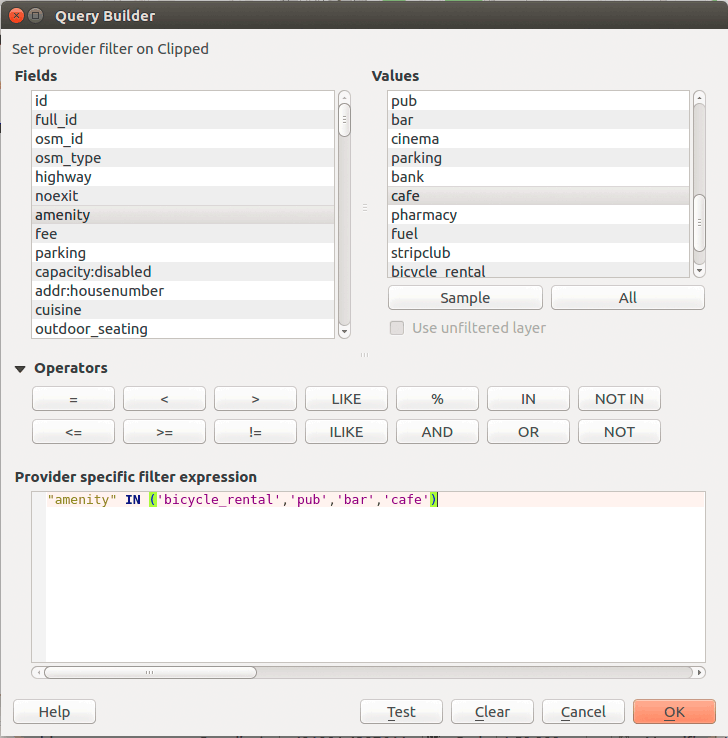
Figure 21: Filtering data with Query Builder
We can now right-click and select Save As... to create GeoJSON files of the analysis layers. We want to use the WGS84 CRS for these layers.
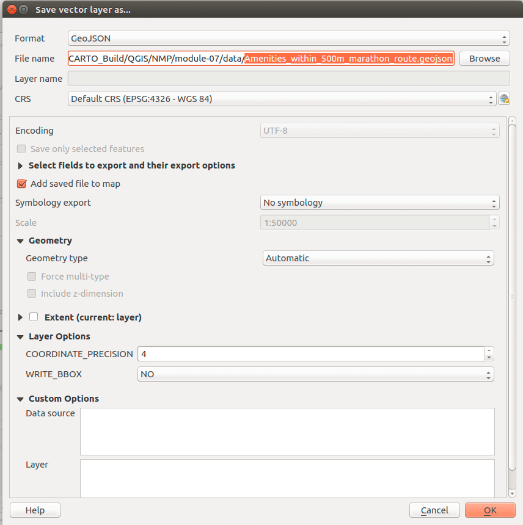
Figure 22: Save out to GeoJSON format for online mapping
Repeat for the buffer and marathon route.
The intersect analysis tool finds all the places where two layers intersect and combines their attributes. Let's intersect the marathon route with the parklands. An example purpose of this analysis would be to quantify the marathon distance in each park.
Choose Vector > Geoprocessing Tools > Intersection.
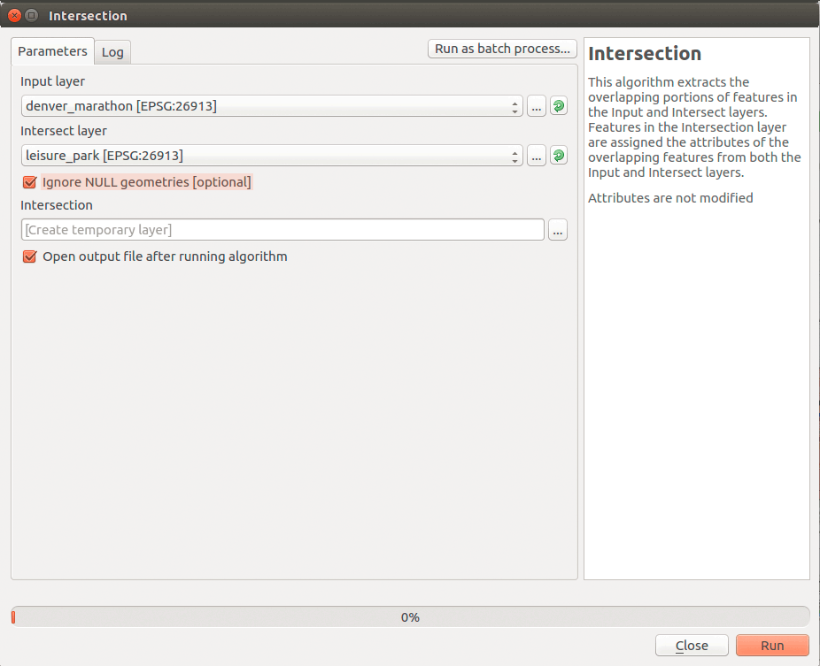
Figure 23: Intersection settings
The "Input vector layer" will be clipped by and take the attributes of the "Intersect layer." The output geometry type will be the same as the input vector layer.
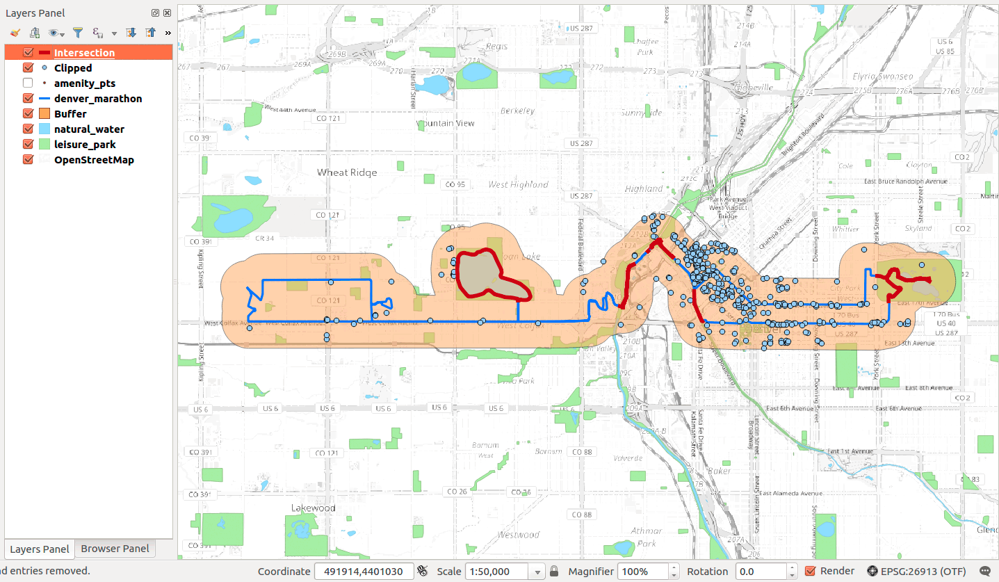
Figure 24: Intersection output on map
Now open the attribute table and understand how the two layers were combined.
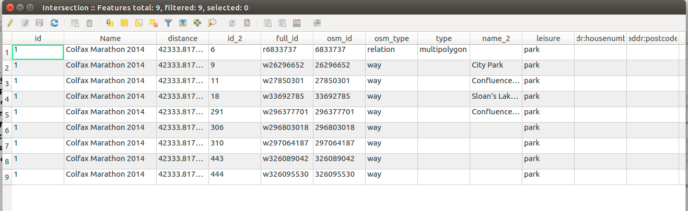
Figure 25: Intersection output in attribute table
Each record in this table is a segment of the marathon in a park. Note the distance field is invalid. Using the Field Calculator, we can add the length of the marathon route in each park. This might help organizers plan runner support along the route. The Field Calculator statement would be:
distance = $length
with the Field Calculator expression:
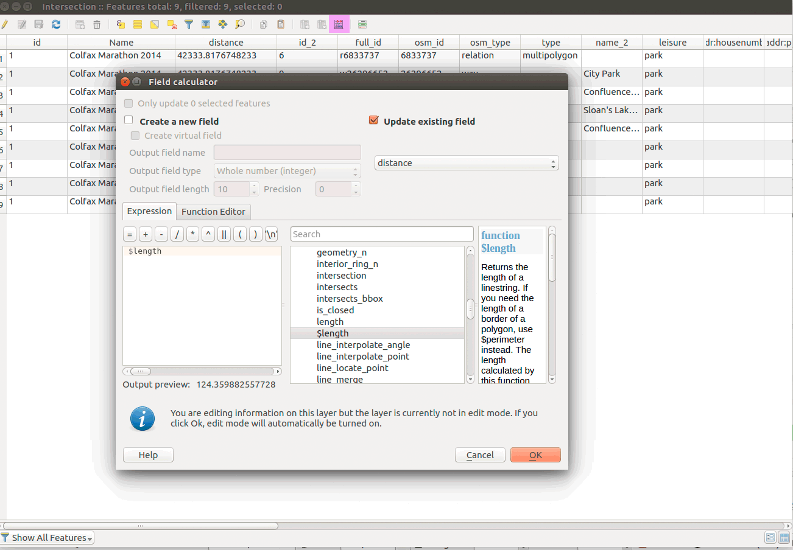
Figure 21: Field calculating distance of marathon routes inside parks
In the following section, we will discuss some uses of the common geoprocessing functions in QGIS.
When you start tool-based geoprocessing, you should clean up the attribute tables of your input spatial layers. Although the Clip and Buffer tools do not change the attribute table of the input layer, other tools alter and combine attribute tables. As we have seen in the intersect tool, attributes can be made invalid after geoprocessing. The strategy for managing attributes centers on two goals:
Remove unnecessary fields and rename field names with the Vector > Table Manager plugin or during an attribute table edit session. You can also prune attributes during a Save As... with the Select fields to export and their export options. For the best results, make sure the "Name" fields are different in all of your attribute fields.
Clip - You should be familiar with the Clip tool. It allows you to change the shape of an analysis area by clipping one layer to the shape of another. This is helpful when you're trying to limit the area you're working with. A helpful way to think about the clip tool is to imagine that you're using a cookie cutter to cut dough. The input layer to clip is the dough, and the clip layer whose shape you're trying to create is the cookie cutter.
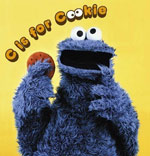
Figure 26: "C" is for Clip, not cookies!
Considerations
Difference - This is tool is the opposite of clip and could be called "erase." The layer created by this tool will be the input layer minus whatever portion was overlapped by the difference layer.
Intersect - The intersect analysis tool finds all the places where two layers intersect and combines their attributes.
Considerations
Union - The Union tool will divide and combine two polygon layers into one layer. A typical use of the union function is combining the attributes of two overlapping polygon layers. Imagine if you needed to find which land parcel had the greatest amount of a certain soil type. After a union between these layers, every soil polygon would be divided by parcel with an attribute that described to which parcel it belonged. With a geometry field calculation you could find which parcel had the greatest amount of certain soil type.
Considerations
Symmetrical Difference - The symmetrical difference tool is the opposite of the intersect tool. Instead of finding the space where two layers overlap and eliminating everything else, symmetrical difference finds the non-intersecting space between the two layers and eliminates the intersecting features.
Considerations
A visual summary of Union, Intersection, and Symmetrical Difference Tools:
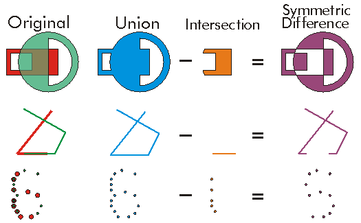
Figure 22: Comparison of three overlay geoprocessing tools
Dissolve - We saw Dissolve as an option earlier within the buffer tool. The tool can combine overlapping and adjacent features into a single feature. If you have polygon layer for counties in one state, you could dissolve them into a single polygon representing the state boundary. This is the default option, "Dissolve all" for this tool.
Features can also be dissolved by an attribute. If you county polygon layer had an attribute for "region," e.g., eastern counties and western counties, you could dissolve the layer into two polygons, representing the two regions. If you had a road centerline layer with an attribute for road names, you could dissolve by this attribute and get a line layer representing the entire length of each road.
Considerations
The graphical processing modeler allows us to automate workflows of geoprocessing tools using a simple graphical interface. As we've seen, most operations are not isolated, but rather part of a chain of operations, e.g., Reproject layer, Buffer, Clip, Intersect, etc... Using this modeler, that chain of processes can be wrapped into a single tool, which can be shared and used on a different set of inputs.
Let's consider our Denver marathon exercise. We wanted to find amenities within 500 meters on the route. After we harvest data from OSM and output a layer of desired amenities, we did the following:
Imagine if we had many marathon routes to analyze or wanted to tweak the buffer distance. Instead of running each tool numerous times, we could build a model and run it once. We could also share the model, aka tool, with other QGIS users.
Before we build the tool, we need to make sure we have a marathon route and a shapefile or GeoJSON of filtered amenities. The layers can be in the original CRS of WGS 84. Your QGIS should like:
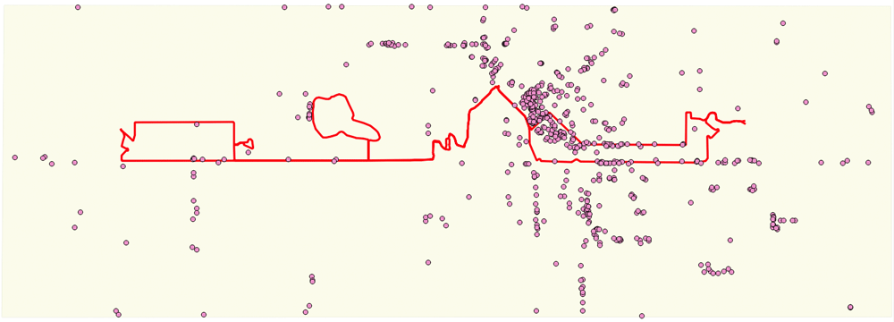
Figure 27: Original marathon route and filtered amenities, both in WGS 84 CRS. Make a tool that does all the prior work in one step.
Open the Processing -> Graphical Modeler... tool in QGIS:
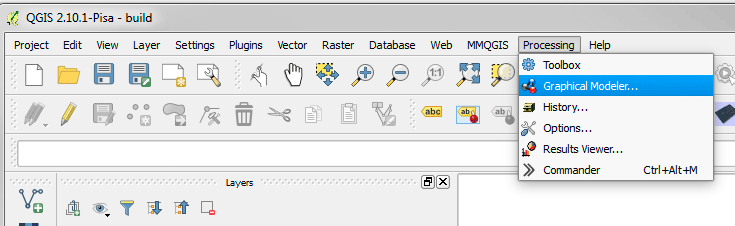
Figure 28: Launching the processing modeler.
Before we build the model, give it a [model name] of "Amenities within Distance Of Marathon" and [group name] of "MAP671 Tools" and then Save the model in its default location. This will give you access to the tool within other panels in QGIS:
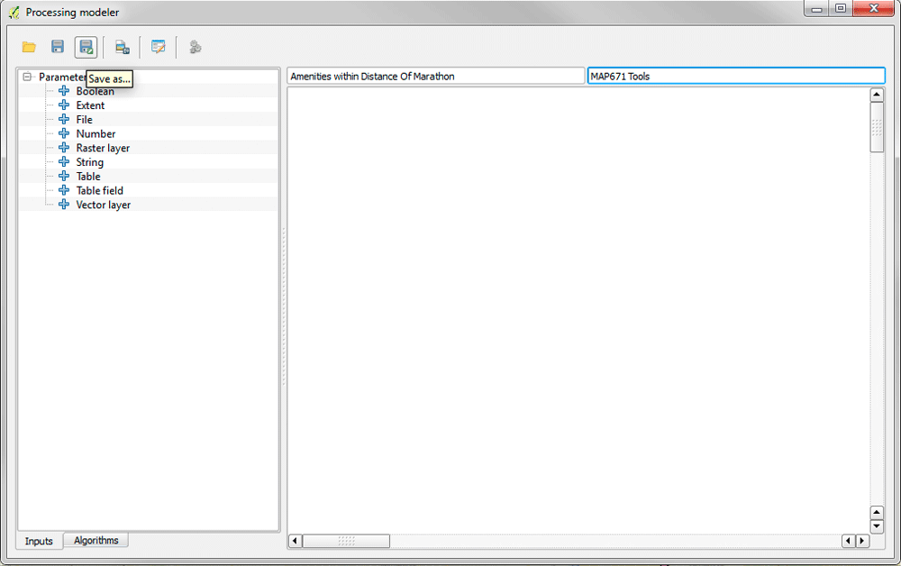
Figure 29: Save tool with descriptive Model Name and Group Name before proceeding.
Use the Inputs tab to add a Vector layer for the input marathon route making sure you give it a unique name:
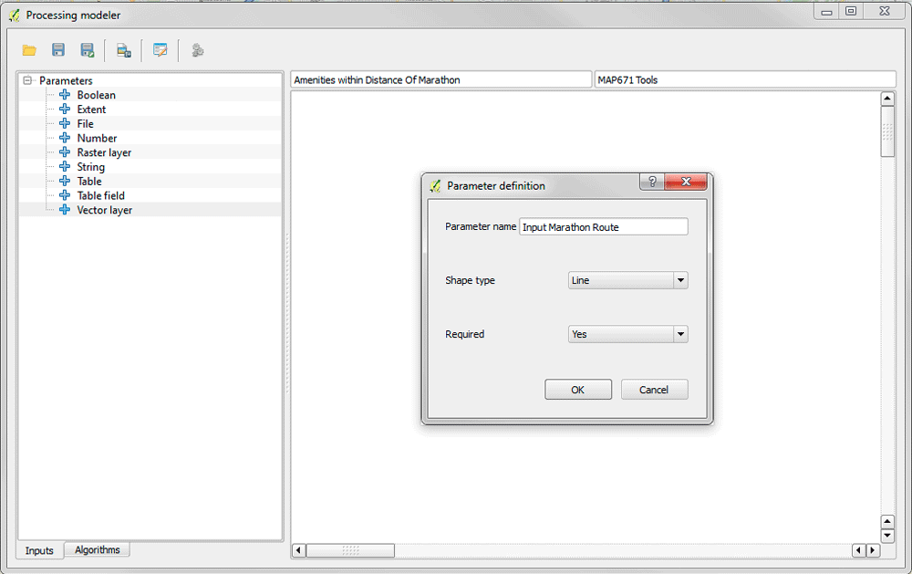
Figure 30: Add tool that requires a line vector layer input.
Then add Vector layer for the input amenities points:
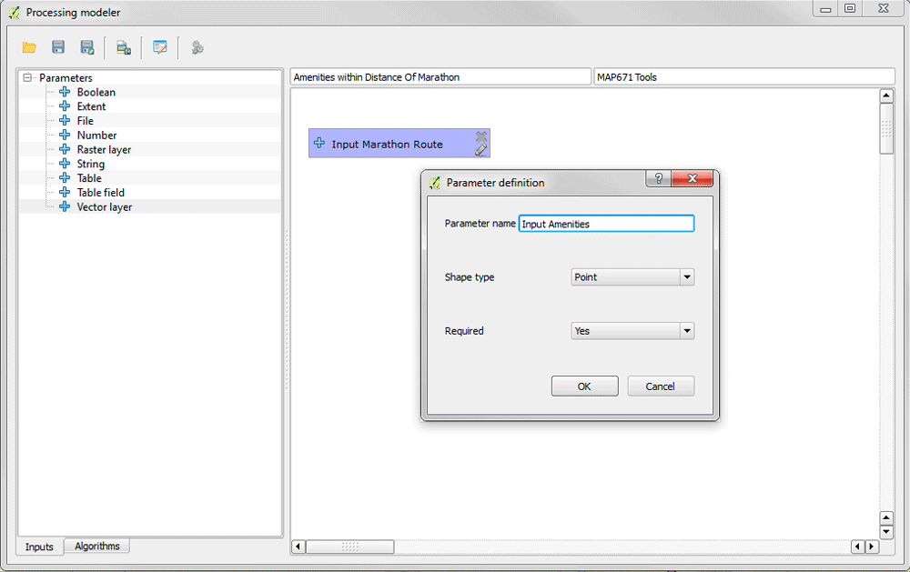
Figure 31: Add tool that requires a point vector layer input.
We need to reproject both layers to our local CRS go UTM 13 (EPSG: 26913). Go to the Algorithms tab and search for Retroject layer in QGIS geoalgorithms -> Vector General Tools:
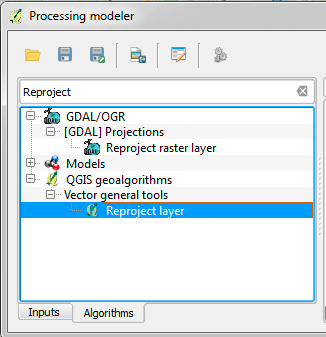
Figure 32: Search for Reproject layer algorithm.
Insert this tool for each input layer paying attention to the connections between tool and layer. This tool will produce a temporary layer that we will use as an input in another tool. Tool settings for reprojecting the marathon route.
Reproject tool settings for reprojecting the marathon route:
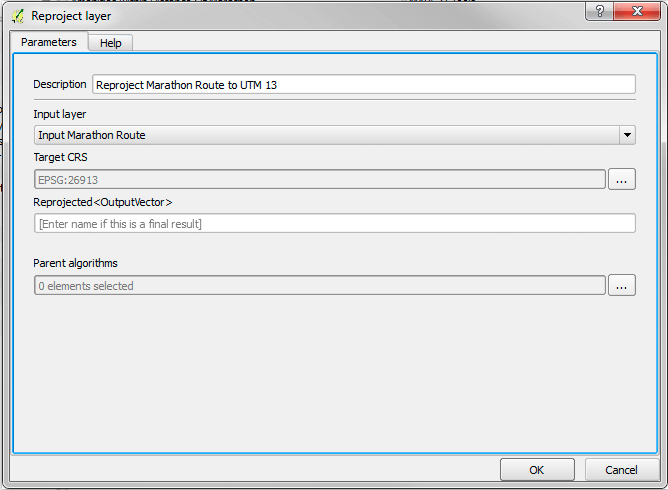
Figure 33: Reproject line layer settings.
Reproject tool settings for reprojecting the amenities:
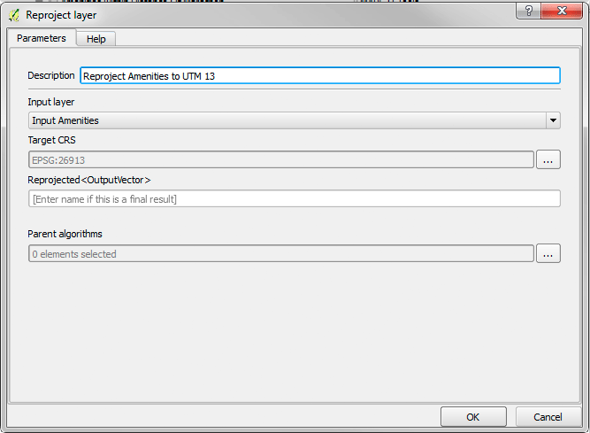
Figure 34: Reproject point layer settings.
What your processing modeler canvas should look like:
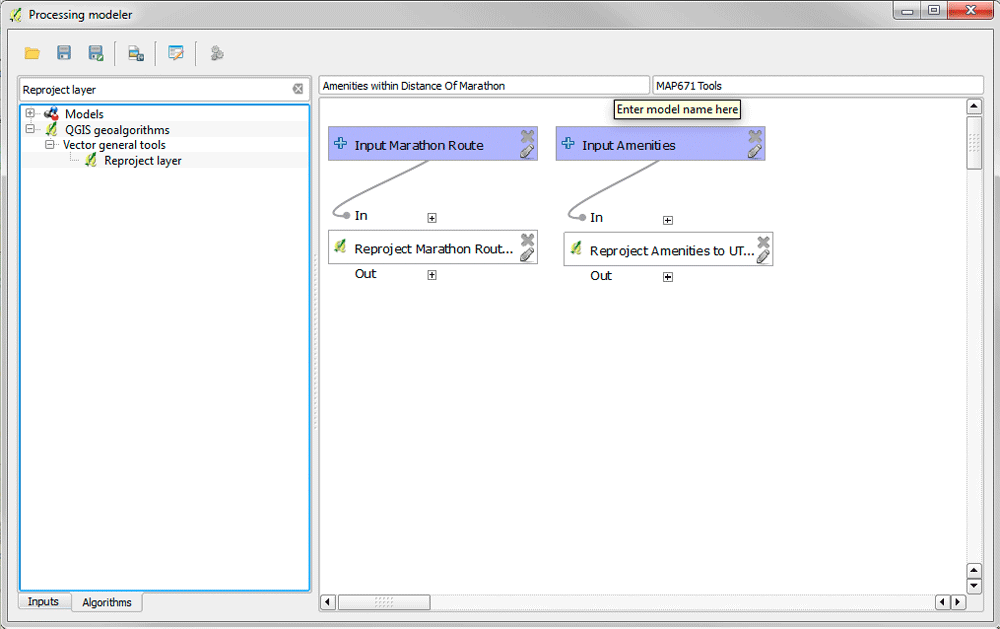
Figure 35: Model after adding first algorithms.
Search for Buffer or "Fixed Distance Buffer" and add the tool to chain using the reprojected route layer as input:
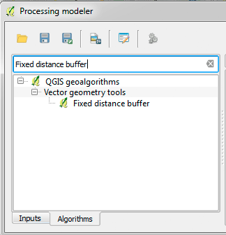
Figure 36: Search for the Buffer, aka Fixed Distance Buffer, algorithm.
Settings for the Fixed Distance Buffer tool:
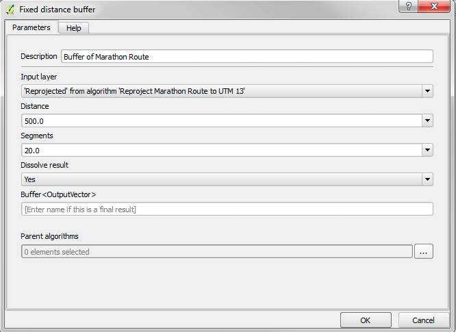
Figure 37: Settings to buffer the marathon route. Note the distance is in meters.
Search for the Clip tool:
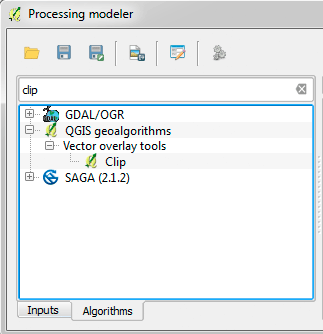
Figure 38: Search for the Clip algorithm.
Settings for the Clip tool:
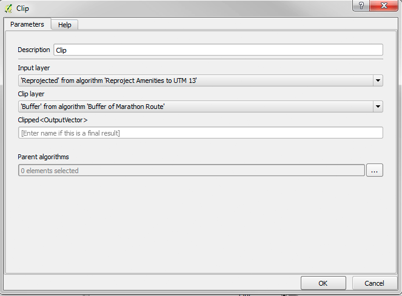
Figure 39: Clip settings.
Finally, reproject the output layer, amenities within 500 meters, back to WGS 84 for use in online mapping. Since this is the last layer, aka "final result," in our workflow give it a name. This will be the layer's name in QGIS's layer panel:
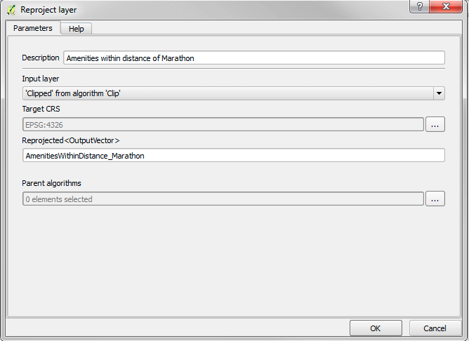
Figure 40: Reproject final output for online mapping.
Save your model and it should look like the following:
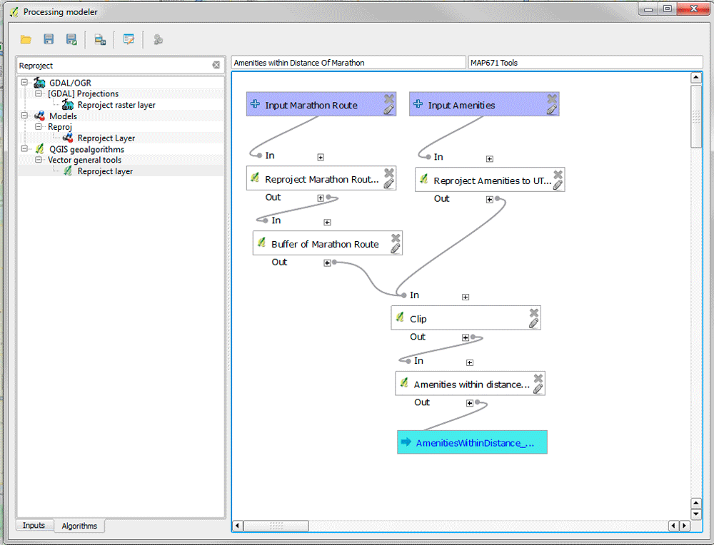
Figure 41: Final model schematic.
Run model and observe the required inputs:
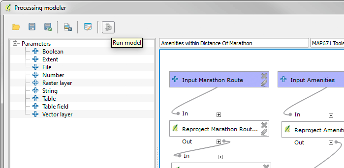
Figure 42: Run model button.
Add the correct input layers:
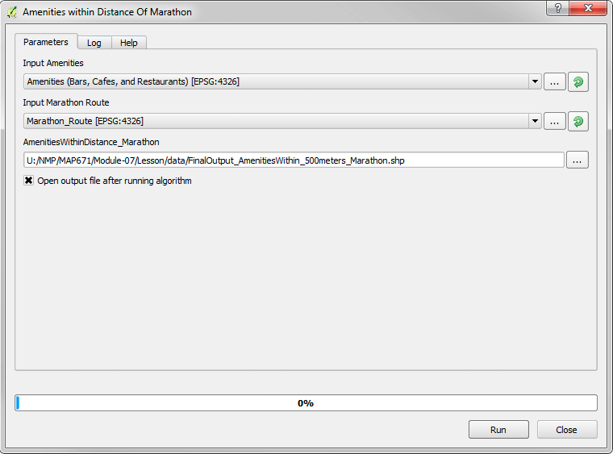
Figure 43: Model dialog and required settings.
Finally, inspect the output in QGIS's map canvas:
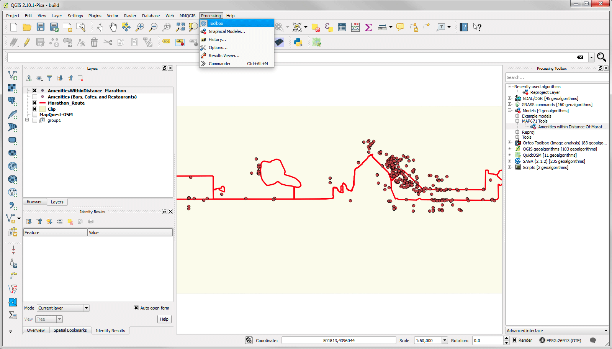
Figure 44: Model output toon map canvas.
Notice that it didn't include any of the intermediate layers, such as the buffer or reprojected layers. You could add those layers to the Layers Panel if you gave the respective tool an output layer name. Also notice that right-hand Processing Toolbox panel. It is activated in QGIS's menus Processing -> Toolbox. After you save the tool in its default location in QGIS, it will be added to the Models dropdown with the name of the tool.
If you want to edit the model, you can open it via QGIS's menu Processing -> Processing Modeler -> Open Model. If you right+click the model in your Processing Toolbox panel, you find additional options, including batch processing. Batch processing allows you run the tool on multiple inputs:
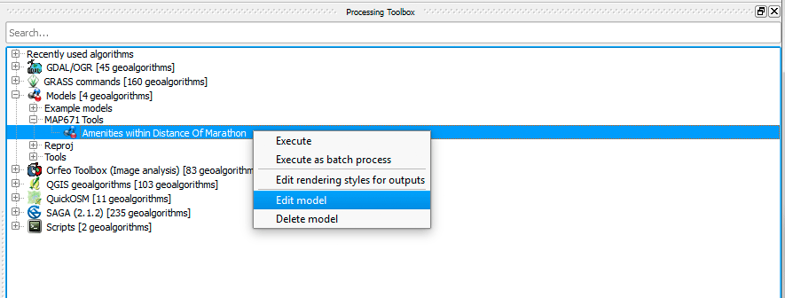
Figure 45: Processing Toolbox panel gives access to model actions.
One last step is required before closing the processing tool. We need to add metadata or help documentation for the tool. After you open (or edit) the model, choose Edit model help:
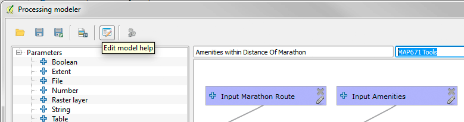
Figure 46: Edit model help gives documentation to help tool users.
Use the Select element to edit and give descriptive information making sure you note any requirements and output formats:
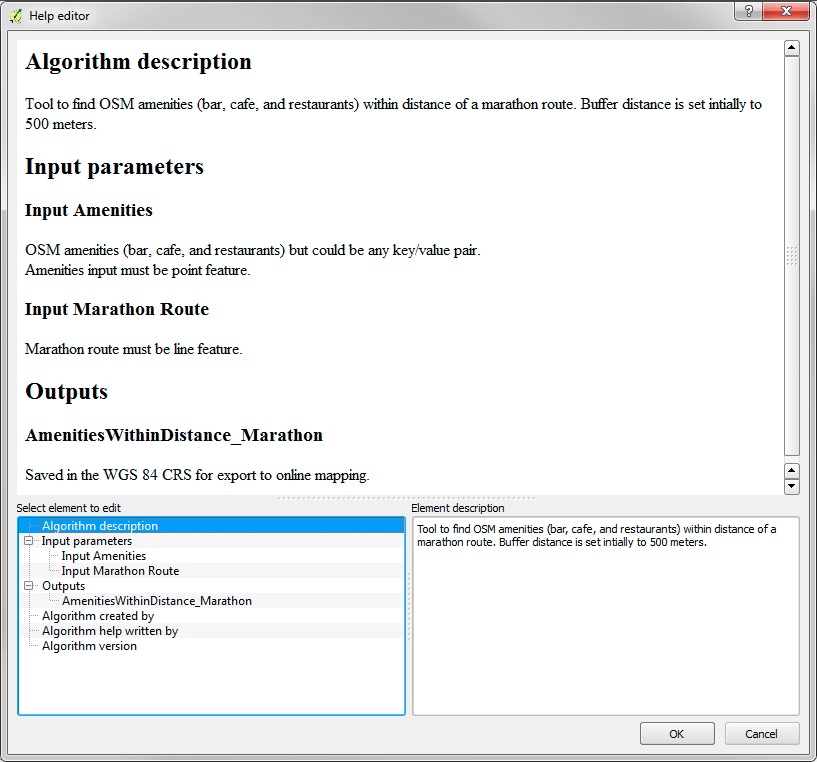
Figure 47: Editing the help sections and adding descriptive information.
After you complete, click OK and then Save in the model menu to ensure you saved the information to the tool. Now, when you run the tool, you should have the following information in the Help tab:
Figure 48: Help documentation during the execution of the tool.
When you have the tool complete, you can copy to a folder outside of the QGIS's default directory space. This will allow you to share the file, which has a ".model" file extension.